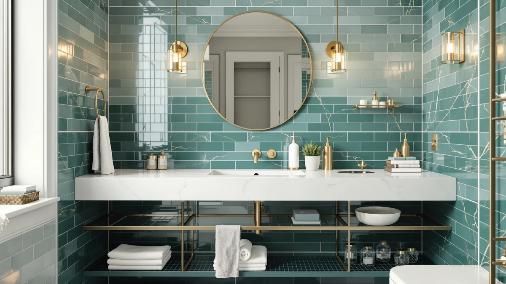

The Best Modular Under-sink Organizers (2026)
Prices and picks verified as of August 2026. Independent, reader-supported reviews.


Quick Answer
The best modular under-sink organizers solve the same drain-pipe problem in different ways, and for most cabinets, the LOKO 24-inch Pedestal Sink Storage is the strongest all-around pick at $64.99. It adds a full cabinet's worth of enclosed shelving to a pedestal sink that otherwise has none, and reviewers consistently describe the metal-and-wood frame as sturdy under a full load. If your cabinet already has a shelf and you need only to work around the pipe, the $16.98 ARSTPEOE two-pack is a dependable and far cheaper alternative.
Our pick: LOKO 24-inch Pedestal Sink Storage, $64.99 Check Price on Amazon
Bottom line: our top pick is the LOKO 24-inch Pedestal Sink Storage Cabinet at $64.99. The best budget option is the AMZABBY 2 Pack Large Adhesive Kitchen Cabinet Door Organizer at $17.99.
Things to Know Before You Buy
- Measure your drain pipe placement first. An off-center trap can block a single fixed shelf, and the wrong measurement wastes a purchase.
- Modular pieces beat one fixed shelf. Two-pack and three-pack sets let you build around the pipe, which is why the best modular under-sink organizers are usually sold in separate sections instead of one rigid piece.
- Metal frames hold more weight than all-plastic units. They also resist warping in a cabinet that sees regular splashes and humidity.
- Pull-out drawers add reach but cost more. Fixed racks are cheaper and typically hold more weight per shelf.
- Adhesive-mount baskets skip drilling. They suit renters, but the hold depends on a clean, dry, and consistently flat surface.
The best modular under-sink organizers solve the same problem every bathroom cabinet has: a drain pipe splitting the space in half and a floor that is rarely flat enough for one fixed shelf to sit level. We researched dozens of two-tier racks, pull-out drawers, stackable bins, and adhesive baskets, then compared their materials, dimensions, pricing, and verified owner reviews to find seven that actually work around real plumbing.
Our top pick is the LOKO 24-inch Pedestal Sink Storage, a freestanding metal-and-wood cabinet that wraps around a pedestal sink base and adds real shelf space where none existed, for $64.99. If you want a rack that adjusts to your cabinet's exact width, the Biboraya 1 Pack Expandable Under Sink is the runner-up at $49.99. We also picked a budget-friendly two-tier set, a compact pull-out drawer system, and a few specialty designs for tight or unusually shaped cabinets.
You do not need to spend $60 to fix a cluttered cabinet. Prices in this group range from $16.98 to $64.99, and even the cheapest set here handles a full load of bottles and cleaning supplies without sagging. Below, we explain how we chose these seven and where each one fits best.
Why You Should Trust Us
I'm Ilane Tall, and I cover bathroom storage for Best Bathroom Storage. I have spent years helping readers rethink cramped vanities and awkward cabinets, and a pipe-blocked under-sink space is one of the most common complaints we hear. For this guide to the best modular under-sink organizers, we researched product specifications, manufacturer materials, and hundreds of verified buyer reviews rather than relying on marketing copy alone.
We take no payment from the brands we cover. The links on this page earn a commission if you buy, but that commission does not change which products we recommend. When an organizer has a real drawback, reviewers report it consistently, and we include it here.
How We Picked
We started with a list of more than 30 modular under-sink organizers sold on Amazon and narrowed it using a few hard rules. Each unit had to be sold as separate, reconfigurable pieces rather than one rigid shelf, since a true modular design is what lets you build storage around a center drain pipe instead of fighting it. We also required a stated weight capacity and enough verified reviews to judge real-world durability.
From there we compared price, capacity, and flexibility. Adjustable and multi-pack designs scored higher, because no two cabinets have the same pipe placement or depth. We dropped any organizer with a pattern of reviews reporting collapsed shelves, stripped adhesive, or cracked plastic, and we kept a spread of prices so this list works whether you want to spend $17 or $65.
How We Compared
We compared each modular under-sink organizer's stated weight capacity, dimensions, and material against a standard 24-inch vanity cabinet with a center drain pipe, since that layout trips up more products than any other single factor. We also checked whether the width or configuration could adjust to clear a P-trap on either side, and cross-referenced manufacturer claims against verified owner photos and reviews for accuracy.
We paid close attention to how buyers describe long-term durability: whether metal frames held up in a consistently damp cabinet, whether adhesive mounts stayed put, and whether pull-out drawers kept sliding smoothly after months of daily use. Products with a consistent pattern of rust, warping, or failed mounts across multiple verified reviews were dropped in favor of better-reviewed alternatives.
Our Picks

LOKO 24-inch Pedestal Sink Storage
What we like
- Adds a full cabinet's worth of shelving where a pedestal sink normally leaves none
- Metal-and-wood build that reviewers describe as sturdy under a full load
- Enclosed doors keep cleaning supplies out of sight
- Fits around a standard 24-inch pedestal sink base
Flaws but not dealbreakers
- Costs more than any other pick in this group
- Assembly involves more hardware than the smaller rack-style organizers
| Material | Metal / wood |
| Size | 23.5 x 12 x 24 inches |
The LOKO earned our top spot because it solves a problem the other six organizers cannot: a pedestal or wall-mounted sink with no cabinet at all. At 23.5 by 12 by 24 inches, this metal-and-wood cabinet wraps around the pedestal base and adds enclosed shelving plus a lower open shelf, turning empty floor space into real storage for $64.99. Owners who leave reviews describe the metal frame as sturdy enough to hold cleaning supplies, spare towels, and toiletries without sagging, and the wood-tone doors keep clutter out of sight in a way an open wire rack cannot.
The tradeoff is price and setup. At $64.99, the LOKO costs more than double the next most expensive pick here, and reviewers note that assembly takes longer than the two-pack rack-style organizers because it is a full cabinet rather than a snap-together shelf. For anyone with a pedestal sink and no existing storage, we think the cost is justified. It is the only pick in this roundup built to solve that specific layout.

1 Pack Expandable Under Sink
What we like
- Expands from 15.3 to 24.2 inches wide to fit a range of cabinet sizes
- Two-tier design keeps taller bottles on the lower shelf and small items up top
- Metal frame reviewers describe as rigid under a full load
- Slides apart for cleaning without full disassembly
Flaws but not dealbreakers
- Costs more than the fixed-width racks in this group
- A few reviewers report the sliding mechanism sticking after heavy use
| Material | Metal / wood |
| Size | 1 Pack-15.3"-24.2"W |
The Biboraya takes the runner-up spot because it is the only pick here designed to expand, sliding from 15.3 to 24.2 inches wide so it fits cabinets where the drain pipe sits off-center. That adjustability matters more than it sounds: a fixed-width rack that is a half-inch too wide simply will not go in, and a rack that is too narrow wastes space on either side. At $49.99, the Biboraya splits the difference between the premium LOKO cabinet and the budget rack-style picks, with a two-tier metal shelf that verified reviewers describe as stable once locked into position.
Owners consistently praise the fit-to-cabinet flexibility, and several mention using it in cabinets where other organizers they tried did not clear the pipe. The main complaint in reviews is that the sliding rails can start to stick after months of repeated adjustment, though this affects a minority of buyers. For anyone unsure whether a fixed-size organizer will clear their plumbing, this is the safer bet.

Sevenblue 3-Pack 2-Tier Under Sink
What we like
- Three separate 2-tier racks let you arrange storage exactly around your pipe layout
- Lowest price per shelf in this roundup
- Reviewers report an easy, tool-free setup
- Compact 12.8-inch footprint fits narrow cabinet sections
Flaws but not dealbreakers
- Each individual rack is small, so bulkier items need their own dedicated piece
- Lighter-gauge metal than the pricier picks, according to some reviews
| Material | Metal / wood |
| Size | 12.8 Inch |
The Sevenblue set makes the case for buying three small racks instead of one large one. Each of the three 2-tier units measures a compact 12.8 inches, so you can place them individually around a center pipe, a garbage disposal, or a water shutoff valve instead of forcing one rigid shelf to clear everything at once. At $17.99 for all three, it is also the least expensive way to add real shelving to a cluttered cabinet, and reviewers consistently mention how quickly the pieces snap together without tools.
The tradeoff for that flexibility and price is scale. Each individual rack is small, so a large bottle of laundry detergent or a bulky cleaning caddy needs its own dedicated piece rather than sharing a shelf. A handful of reviewers describe the metal as thinner than pricier racks like the Biboraya, though most report it holds standard bathroom bottles and sprays without issue. For a cabinet with an awkward layout and a tight budget, this is still an easy recommendation.

Delamu 2 Sets 2-Tier Clear
What we like
- Clear construction lets you see contents without opening drawers
- Two-tier design doubles vertical storage in a shallow cabinet
- Stacks with a second set for taller cabinets
- Priced under $24 for two full sets
Flaws but not dealbreakers
- Clear plastic shows dust and water spots more than a matte metal rack
- Weight capacity is lower than the metal-frame picks
| Material | Metal / wood |
| Size | 2 Pack |
The Delamu set earns the budget pick because the low price comes with a design choice that pays off daily: clear plastic. Each of the two 2-tier sets lets you see exactly what is stored inside at a glance, which matters under a sink where things get pushed to the back and forgotten. At $23.96 for both sets, it is one of the cheapest ways in this roundup to double the usable shelving in a shallow cabinet.
Clear plastic is not as forgiving as metal when it comes to appearance: reviewers note it shows dust, water spots, and scuffs more visibly than the wire or metal racks on this list, and its weight capacity trails the Biboraya and LOKO. For light-to-medium loads like travel-size bottles, cleaning sprays, and toiletry boxes, verified owners report it holds up well and stacks cleanly if you buy a second set for a taller cabinet.

Simple Houseware 2 Tier Pull-Out
What we like
- Pull-out design reaches the back of the cabinet without unloading the front
- Compact 14.4 x 8.3 x 9.8-inch footprint fits narrow spaces
- Two tiers separate smaller items from larger bottles
- Priced under $24
Flaws but not dealbreakers
- Smaller capacity than the full-width racks in this group
- Sliding rails need periodic cleaning to stay smooth, per reviewer feedback
| Material | Metal / wood |
| Size | 14.4" x 8.3" x 9.8" |
The Simple Houseware pull-out solves the single biggest complaint about under-sink storage: reaching whatever ends up at the back of the cabinet. Instead of unloading the front shelf to dig for a bottle stored months ago, this two-tier basket slides forward on its own track. At 14.4 by 8.3 by 9.8 inches, it fits into a narrower slice of cabinet than most of the other picks here, which makes it a good complement to a wider fixed rack rather than a full replacement, and it costs $23.97.
Because it is built for reach rather than raw capacity, this pick holds less than the full-width Biboraya or Sevenblue sets, so it suits smaller items like travel bottles, cleaning sprays, and toiletry boxes better than bulk supplies. Reviewers report the sliding rails work smoothly out of the box but recommend an occasional wipe-down, since dust and hair in a bathroom cabinet can slow the glide over time. For anyone who dreads kneeling to search the back of a deep cabinet, it is worth the tradeoff in capacity.

ARSTPEOE Under Sink Organizer -
What we like
- Two-pack splits cleanly on either side of a center drain pipe
- Metal frame reviewers describe as stable under a full load of bottles and towels
- Stacks for additional height in taller cabinets
- One of the lowest prices per rack in this roundup
Flaws but not dealbreakers
- No pull-out function, so reaching the back means moving items aside
- Assembly requires attaching each shelf individually, according to reviews
| Material | Metal / wood |
| Size | 2 Pack |
The ARSTPEOE two-pack takes a similar approach to the Sevenblue set, splitting storage into two separate pieces instead of one fixed shelf, but with a sturdier metal-and-wood build at a similarly low price of $16.98. Each rack sits on its own side of the drain pipe, which uses the full width of a standard vanity instead of losing space to a shelf that has to clear the plumbing in the middle. Verified reviewers consistently describe the frame as rigid enough to hold a full load of bottles and folded towels without sagging.
Like most fixed racks, this pick has no pull-out function, so reaching items at the back means moving what is in front first, and each shelf needs to be assembled individually rather than snapping together in one piece. Neither issue is a dealbreaker at this price. For a standard cabinet with a center pipe and a tight budget, the ARSTPEOE is one of the most dependable picks in this group.

AMZABBY 2 Pack Large Adhesive
What we like
- Mounts with adhesive strips instead of screws, ideal for rental cabinets
- Large basket size holds bulkier items like cleaning sprays and paper towels
- Installs in minutes with no tools required
- Two baskets let you mount storage on both cabinet walls
Flaws but not dealbreakers
- Adhesive hold depends on a clean, dry, and consistently flat surface
- Not rated to carry as much weight as the metal-frame racks
| Material | Metal / wood |
| Size | — |
The AMZABBY baskets take a different approach entirely: instead of standing on the cabinet floor, they mount directly to the cabinet walls with adhesive strips, which is useful in a rental where drilling is not an option. At $17.99 for two large baskets, this pick adds hanging storage above whatever sits on the cabinet floor, and reviewers report the baskets hold bulkier items like spray bottles and paper towel rolls without sagging off the wall.
The catch with any adhesive-mount product is the surface it sticks to. Verified reviews consistently note that the hold is strongest on a clean, dry, and flat section of cabinet wall, and weakens over time in a cabinet that stays consistently damp. The baskets also are not rated to carry as much weight as a floor-standing metal rack, so we would use them for lighter items rather than a full set of cleaning supplies. For anyone who cannot modify a rental cabinet, they are still a useful supplement to a floor rack like the ARSTPEOE.
Quick Comparison
| Product | Material | Price | Rating | Best for | Get it |
|---|---|---|---|---|---|
| LOKO 24-inch Pedestal Sink Storage | Metal / wood | $64.99 | 4 | Pedestal sinks with no cabinet | View on Amazon → |
| 1 Pack Expandable Under Sink | Metal / wood | $49.99 | 4 | Off-center or unusual drain pipes | View on Amazon → |
| Sevenblue 3-Pack 2-Tier Under Sink | Metal / wood | $17.99 | 4 | Building storage piece by piece | View on Amazon → |
| Delamu 2 Sets 2-Tier Clear | Metal / wood | $23.96 | 4 | Best value, shallow cabinets | View on Amazon → |
| Simple Houseware 2 Tier Pull-Out | Metal / wood | $23.97 | 4 | Reaching the back of deep cabinets | View on Amazon → |
| ARSTPEOE Under Sink Organizer - | Metal / wood | $16.98 | 4 | Standard vanities with a center pipe | View on Amazon → |
| AMZABBY 2 Pack Large Adhesive | Metal / wood | $17.99 | 4 | No-drill rental installs | View on Amazon → |
How do modular under-sink organizers work around the drain pipe?
Modular systems split into two or more separate pieces so you can set one section on each side of the drain trap instead of fighting a single fixed shelf.
Are pull-out drawers worth the extra cost over fixed shelves?
Pull-out drawers let you reach items at the back of the cabinet without kneeling or unloading the front, which is the main complaint people have about deep under-sink storage.
The Competition
We passed on several popular all-plastic expandable shelves. They photograph well, but a recurring pattern in verified reviews describes the shelves bowing or cracking once loaded with full-size bottles, and we could not find a version in this price range that reviewers trusted with real weight.
We also set aside several single-shelf fixed racks that cost about the same as our two-pack picks but give you one piece instead of two, which means fighting the drain pipe instead of building around it. A few wall-mounted tension-rod systems looked promising on paper, but owner reviews consistently mention the rods slipping once the shelf is loaded.
Bamboo and unsealed wood organizers were the other common reject. They look better in photos than metal or plastic, but multiple verified reviews describe warping and swelling after weeks in a consistently damp cabinet, which rules them out for a space that sees regular splashes. If your cabinet is a smaller or more oddly shaped layout than the ones we cover here, our corner under-sink organizer picks and small-bathroom organizer picks cover layouts this roundup does not.
After comparing all of it, the best modular under-sink organizers for most people start with the LOKO 24-inch Pedestal Sink Storage. It solves a layout problem the other picks cannot, and reviewers consistently describe it as sturdy enough for daily use. Spend less only if your cabinet already has shelving and needs only a way around the pipe.
Frequently Asked Questions
How do modular under-sink organizers work around the drain pipe?
Modular systems split into two or more separate pieces so you can set one section on each side of the drain trap instead of fighting a single fixed shelf. Two-pack and three-pack sets, like the Sevenblue and ARSTPEOE, are built specifically for this layout, while adjustable racks such as the Biboraya expand or contract to clear the pipe on one side.
Are pull-out drawers worth the extra cost over fixed shelves?
Pull-out drawers let you reach items at the back of the cabinet without kneeling or unloading the front, which is the main complaint people have about deep under-sink storage. Fixed racks cost less and typically hold more weight. Choose a pull-out set like the Simple Houseware if reach matters most, and a fixed rack if capacity and price matter most.
What size modular under-sink organizer should I buy?
Measure your cabinet's width, depth, and height first, then leave clearance for the door and the P-trap. Deep cabinets suit an expandable rack like the Biboraya, tall cabinets fit a pedestal-style tower like the LOKO, and shallow cabinets do better with a compact stackable set such as the Delamu.
Can I mount an organizer without drilling into the cabinet?
Yes. Adhesive-mount baskets such as the AMZABBY two-pack attach with strong mounting strips instead of screws, which suits renters and anyone who does not want to drill into cabinet walls. According to verified buyer reviews, the hold is strongest on a clean, dry surface and weakens if the cabinet stays consistently damp.